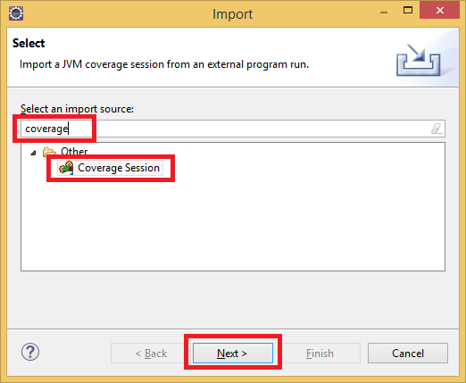
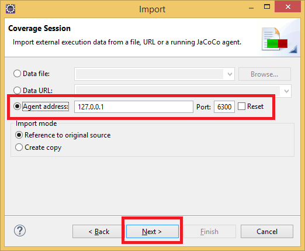
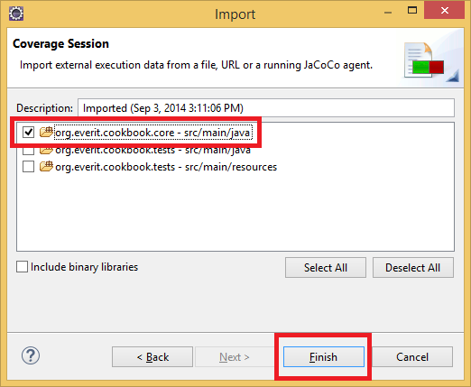
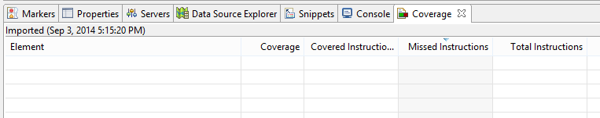
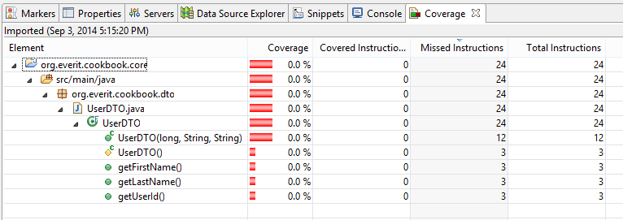
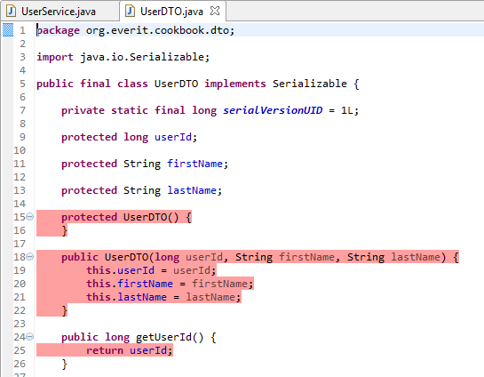
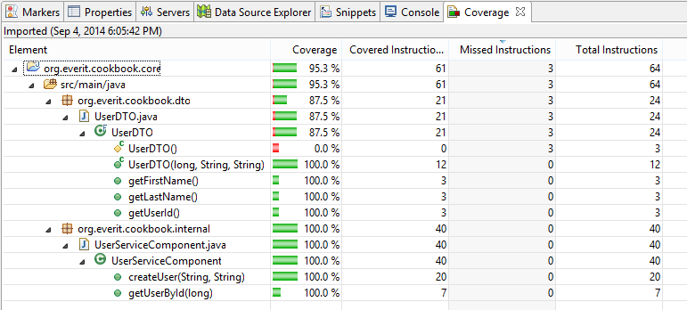

Test Driven Development
Test Driven Development
Based on the Dummy project that we have just created in the last chapter we will implement the business logic of UserService in the way that we always write the tests before the implementation. If you skipped that chapter, please check out the 01 - skeleton branch in eclipse and import the content as a maven project.
This part expects that the JaCoCo Eclipse plugin is installed as described in the Development tools chapter.
Open the pom.xml file of the tests project and add jacoco configuration to the eosgi-maven-plugin:
<jacoco>
<includes>org.everit.cookbook.*</includes>
<output>$${ if (System.getenv("EOSGI_STOP_AFTER_TESTS").equals("true")) "file"; else "tcpserver"; }</output>
</jacoco>If the development OSGi container is started, stop it.
Do an incremental update on the OSGi container by running "mvn eosgi:dist" command on the tests project.
Select File -> Import... item in Eclipse menu
In the popup window, type "coverage" into the search field and select the Coverage Session option
On the next screen select the Agent Address option and click Next
On the following screen select scr/main/java folder of org.everit.cookbook.core project and click Finish
After finishing the steps, a new View should appear in Eclipse.
The content of the view is empty as there is no class in the specified source folder. This view can be refreshed with a right click or by pushing F5 when the focus is on the view later.
Create an serializable immutable DTO class named UserDTO in the core project with the package name org.everit.cookbook.dto and the following properties:
long userId
String firstName
String lastName
The final source should look like the following:
package org.everit.cookbook.dto;
import java.io.Serializable;
public final class UserDTO implements Serializable {
private static final long serialVersionUID = 1L;
protected long userId;
protected String firstName;
protected String lastName;
protected UserDTO() {
}
public UserDTO(long userId, String firstName, String lastName) {
this.userId = userId;
this.firstName = firstName;
this.lastName = lastName;
}
public long getUserId() {
return userId;
}
public String getFirstName() {
return firstName;
}
public String getLastName() {
return lastName;
}
}
The new package must be exported from the bundle. Add a org.everit.cookbook.dto to the list of exported packages in the pom file of the core project.
Add the following two functions with javadoc to the UserService interface
long createUser(String firstName, String lastName); // Parameters must not be null
UserDTO getUserById(long userId);
In the end, the source of the UserService interface should look similar to the following:
package org.everit.cookbook;
import org.everit.cookbook.dto.UserDTO;
public interface UserService {
/**
* Creates a new user.
*
* @param firstName
* The first name of the user. Must not be null.
* @param lastName
* The last name of the user. Must not be null.
* @return The id of the newly created user.
* @throws NullPointerException
* if any of the parameter is null.
*/
long createUser(String firstName, String lastName);
/**
* Queries the data of a user.
*
* @param userId
* The id of the user.
* @return The data of the user or null if there is no user with the specified id.
*/
UserDTO getUserById(long userId);
}
Let's have a look on the coverage report!
Click on the Coverage view
Push F5
The core project with the source folder that was selected during the import appears. Open all notes the tree of the project!
Double click on the name of the class to open the UserDTO class in Java.
All rows that contain runnable command are highlighted with red color as the class is not tested at all yet.
At this point, there as an API that can be tested. In one iteration the test code must be implemented first than the production code. For more information about the development method, see the three laws of TDD.
To be able to call functions on the UserService OSGi service, it must be injected into the UserServiceTest component.
Add a new private write-only property to the UserServiceTest class with UserService type and the name userService
Add the @Reference annotation to the new property and set the bind method to be the setter.
Implement the testCreateAndGet() function in the way that it
creates a new user
checks if the newly created user exists and the data of the user is the same specified during creation
At this point the code of UserServiceTest class should look like the following:
package org.everit.cookbook.tests;
import org.apache.felix.scr.annotations.Component;
import org.apache.felix.scr.annotations.Properties;
import org.apache.felix.scr.annotations.Property;
import org.apache.felix.scr.annotations.Reference;
import org.apache.felix.scr.annotations.Service;
import org.everit.cookbook.UserService;
import org.everit.cookbook.dto.UserDTO;
import org.junit.Assert;
import org.junit.Test;
@Component
@Service(UserServiceTest.class)
@Properties({
@Property(name = "eosgi.testEngine", value = "junit4"),
@Property(name = "eosgi.testId", value = "UserServiceTest")
})
public class UserServiceTest {
@Reference(bind = "setUserService")
private UserService userService;
protected void setUserService(final UserService userService) {
this.userService = userService;
}
@Test
public void testCreateAndGetUser() {
long userId = userService.createUser("John", "Doe");
UserDTO user = userService.getUserById(userId);
Assert.assertNotNull(user);
Assert.assertEquals(userId, user.getUserId());
Assert.assertEquals("John", user.getFirstName());
Assert.assertEquals("Doe", user.getLastName());
}
}
If the test bundle was deployed now to the container, nothing would be shown. The test component needs a UserService OSGi service to become satisfied.
Create a new class in the org.everit.cookbook.internal package of the core project called UserServiceComponent that implements the UserService interface! The methods of the interface should be implemented in the most primitive way as Eclipse generates them.
Add @Component and @Component annotations to the class!
The source of the created class should look like the following:
package org.everit.cookbook.internal;
import org.apache.felix.scr.annotations.Component;
import org.apache.felix.scr.annotations.Service;
import org.everit.cookbook.UserService;
import org.everit.cookbook.dto.UserDTO;
@Component
@Service
public class UserServiceComponent implements UserService {
public long createUser(String firstName, String lastName) {
// TODO Auto-generated method stub
return 0;
}
public UserDTO getUserById(long userId) {
// TODO Auto-generated method stub
return null;
}
}
Deploy the core and the tests project together to the OSGi container! You will see that although the test engine processed the test component, no were processed. The reason is that during the development mode, only those test functions are processed that have the @TestDuringDevelopment annotation. It is also possible to add this annotation to the class. In that case, all test method would be processed after the deployment.
Add the @TestDuringDevelopment annotation to the UserServiceTest class so all test methods will be processed after each redeployment.
Deploy the tests bundle to the OSGi container! The test method is processed, but there is an AssertionException.
INFO|2404/0|felixtest|14-09-04 10:17:47|INFO: INFO|2404/0|felixtest|14-09-04 10:17:47|------------------------------------------------------------------------------- INFO|2404/0|felixtest|14-09-04 10:17:47|Test set: org.everit.cookbook.tests.UserServiceTest (UserServiceTest) INFO|2404/0|felixtest|14-09-04 10:17:47|------------------------------------------------------------------------------- INFO|2404/0|felixtest|14-09-04 10:17:47|Tests run: 1, Failures: 1, Errors: 0, Skipped: 0, Time elapsed: 0.008 sec <<< FA ILURE! INFO|2404/0|felixtest|14-09-04 10:17:47|testCreateAndGetUser Time elapsed: 0.004 sec <<< FAILURE! INFO|2404/0|felixtest|14-09-04 10:17:47|java.lang.AssertionError INFO|2404/0|felixtest|14-09-04 10:17:47| at org.junit.Assert.fail(Assert.java:86) INFO|2404/0|felixtest|14-09-04 10:17:47| at org.junit.Assert.assertTrue(Assert.java:41) INFO|2404/0|felixtest|14-09-04 10:17:47| at org.junit.Assert.assertNotNull(Assert.java:621) INFO|2404/0|felixtest|14-09-04 10:17:47| at org.junit.Assert.assertNotNull(Assert.java:631) INFO|2404/0|felixtest|14-09-04 10:17:47| at org.everit.cookbook.tests.UserServiceTest.testCreateAndGetUser(UserSe rviceTest.java:35) INFO|2404/0|felixtest|14-09-04 10:17:47| at sun.reflect.NativeMethodAccessorImpl.invoke0(Native Method) INFO|2404/0|felixtest|14-09-04 10:17:47| at sun.reflect.NativeMethodAccessorImpl.invoke(NativeMethodAccessorImpl. java:62) INFO|2404/0|felixtest|14-09-04 10:17:47| at sun.reflect.DelegatingMethodAccessorImpl.invoke(DelegatingMethodAcces sorImpl.java:43) INFO|2404/0|felixtest|14-09-04 10:17:47| at java.lang.reflect.Method.invoke(Method.java:483) INFO|2404/0|felixtest|14-09-04 10:17:47| at org.junit.runners.model.FrameworkMethod$1.runReflectiveCall(Framework Method.java:47) INFO|2404/0|felixtest|14-09-04 10:17:47| at org.junit.internal.runners.model.ReflectiveCallable.run(ReflectiveCal lable.java:12)
Failing of the test is normal as there has been no production code implemented in the current iteration yet.
Implement the createUser(String firstName, String lastName) and the getUserById(long userId) functions of UserComponent class in the way that
the data is stored in a ConcurrentHashMap<Long, UserDTO>
the user id is generated by calling the incrementAndGet() function of an AtomicLong member variable.
At this point the source code of the UserServiceComponent should look similar to the following:
package org.everit.cookbook.internal;
import java.util.Map;
import java.util.concurrent.ConcurrentHashMap;
import java.util.concurrent.atomic.AtomicLong;
import org.apache.felix.scr.annotations.Component;
import org.apache.felix.scr.annotations.Service;
import org.everit.cookbook.UserService;
import org.everit.cookbook.dto.UserDTO;
@Component
@Service
public class UserServiceComponent implements UserService {
private final AtomicLong lastGeneratedUserId = new AtomicLong();
private final Map<Long, UserDTO> storage = new ConcurrentHashMap<Long, UserDTO>();
public long createUser(String firstName, String lastName) {
long userId = lastGeneratedUserId.get();
UserDTO userData = new UserDTO(userId, firstName, lastName);
storage.put(userId, userData);
return userId;
}
public UserDTO getUserById(long userId) {
return storage.get(userId);
}
}
Deploy the core project to the OSGi container! The console shows that the test was processed successfully.
FINEST|2404/0|felixtest|14-09-04 11:09:08|Sep 04, 2014 11:09:08 AM org.everit.osgi.dev.richconsole.internal.Logger info FINEST|2404/0|felixtest|14-09-04 11:09:08|INFO: Richconsole INFO: Installing bundle from 'reference:file:/C:/Users/balaz s_zsoldos/git/cookbook/core/' FINEST|2404/0|felixtest|14-09-04 11:09:08|Sep 04, 2014 11:09:08 AM org.everit.osgi.dev.richconsole.internal.Logger info FINEST|2404/0|felixtest|14-09-04 11:09:08|INFO: Richconsole INFO: Calling refresh on OSGi framework. All packages on uni nstalled bundles should be re-wired FINEST|2404/0|felixtest|14-09-04 11:09:08|Sep 04, 2014 11:09:08 AM org.everit.osgi.dev.richconsole.internal.Logger info FINEST|2404/0|felixtest|14-09-04 11:09:08|INFO: Richconsole INFO: Framework refresh finished with code PACKAGES_REFRESHE D FINEST|2404/0|felixtest|14-09-04 11:09:08|Sep 04, 2014 11:09:08 AM org.everit.osgi.dev.testrunner.junit4.internal.Junit4 TestEngine runTest FINEST|2404/0|felixtest|14-09-04 11:09:08|INFO: Test OSGI Service will be run by JUnit: [org.everit.cookbook.tests.UserS erviceTest] FINEST|2404/0|felixtest|14-09-04 11:09:08|Sep 04, 2014 11:09:08 AM org.everit.osgi.dev.testrunner.internal.TestServiceTr acker dumpTestResults FINEST|2404/0|felixtest|14-09-04 11:09:08|INFO: FINEST|2404/0|felixtest|14-09-04 11:09:08|------------------------------------------------------------------------------ - FINEST|2404/0|felixtest|14-09-04 11:09:08|Test set: org.everit.cookbook.tests.UserServiceTest (UserServiceTest) FINEST|2404/0|felixtest|14-09-04 11:09:08|------------------------------------------------------------------------------ - FINEST|2404/0|felixtest|14-09-04 11:09:08|Tests run: 1, Failures: 0, Errors: 0, Skipped: 0, Time elapsed: 0.001 sec FINEST|2404/0|felixtest|14-09-04 11:09:08|
Refresh the coverage view and check which lines were tested and what is missing!
The createUser(firstName, lastName) function should throw a NullPointerException if the value of the firstName parameter is null.
Create a new method in the UserServiceTest component with the name testCreateUserFirstNameNull
Annotate the method with @Test(expected = NullPointerException.class)
Call the createUser(...) method of the injected UserService in the way that the firstName is null and the last name has a value.
At this point the method should look similar to the following:
@Test(expected = NullPointerException.class)
public void testCreateUserFirstNameNull() {
userService.createUser(null, "Doe");
}
In case the test project was deployed, the test would fail. The logic must be implemented on the production side as well.
Add the following line to the beginning of createUser(...) function of UserServiceComponent class:
Objects.requireNonNull(firstName, "firstName must not be null");
Deploy the core and the tests project to the OSGi container. All tests should be ok.
The createUser(firstName, lastName) function should throw a NullPointerException if the value of the lastName parameter is null.
Create a new method in the UserServiceTest component with the name testCreateUserLastNameNull
Annotate the method with @Test(expected = NullPointerException.class)
Call the createUser(...) method of the injected UserService in the way that the firstName has a value and lastName is null.
At this point the method should look similar to the following:
@Test(expected = NullPointerException.class)
public void testCreateUserLastNameNull() {
userService.createUser("John", null);
}
In case the test project was deployed, the test would fail. The logic must be implemented on the production side as well.
Add the following line to the beginning of createUser(...) function of UserServiceComponent class:
Objects.requireNonNull(lastName, "lastName must not be null");
Deploy the core and the tests project to the OSGi container! All tests should be ok.
There are three tests now. In case "mvn clean install" would have been started from the command line, the process would fail. To avoid that, increase the value of EOSGi-TestNum setting in the pom file of the tests project to 3.